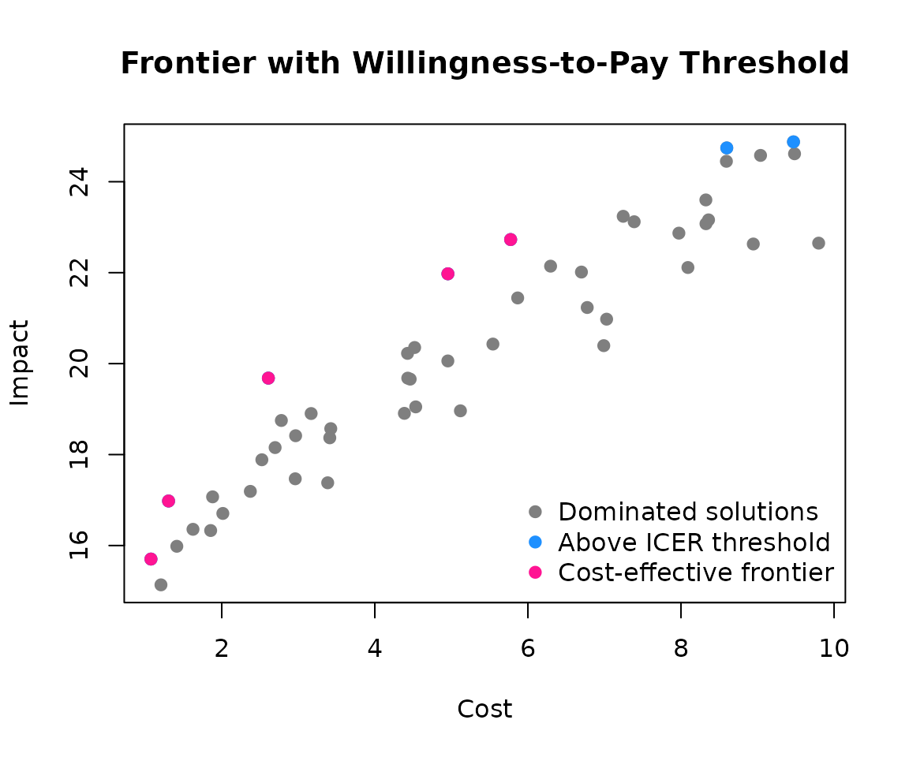
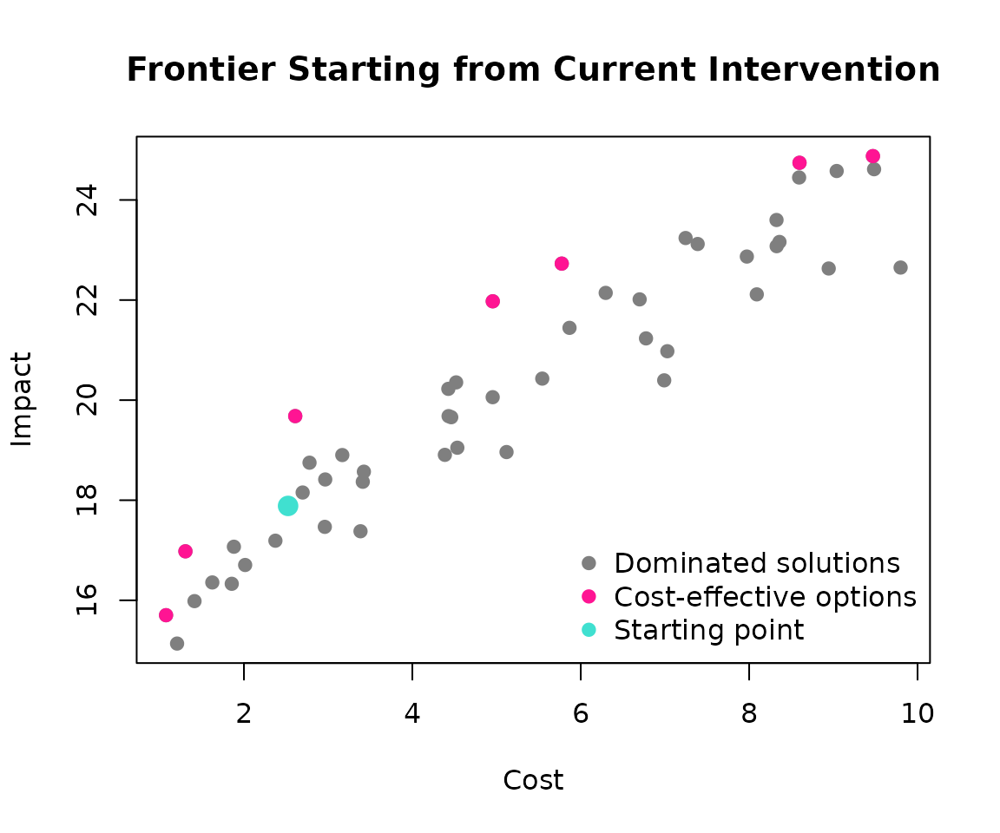
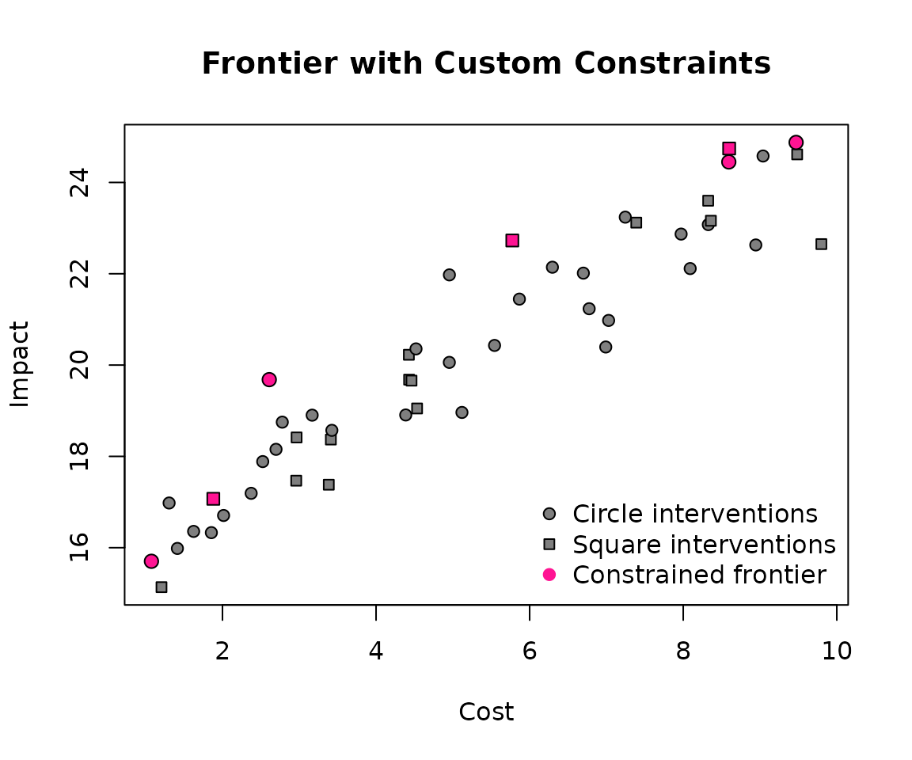

Cost-effectiveness frontier
frontier.Rmd#> Loading required package: ROI.plugin.glpk
#> Loading required package: ompr
#> Loading required package: ompr.roiIntroduction
Cost-effectiveness analysis helps us identify which interventions provide the best value for money. The cost-effectiveness frontier represents the set of interventions that are not dominated by others—meaning no other intervention provides better outcomes for the same or lower cost.
This vignette demonstrates how to use the frontier() function to build cost-effectiveness frontiers from your data. We’ll explore three key features:
Basic frontier identification - finding non-dominated solutions
Willingness-to-pay thresholds - filtering by cost-effectiveness criteria
Custom constraints - applying additional rules during frontier constructionLet’s start by creating some example data representing different healthcare interventions:
set.seed(12)
example <- data.frame(
cost = runif(50, 1, 10)
)
example$impact <- 15 + example$cost + rnorm(50)
example$group <- sample(c("circle", "square"), nrow(example), replace = TRUE)
example <- example[order(example$cost), ]
example$n <- sample(1:5, nrow(example), replace = TRUE)
# Preview our data
head(example)
#> cost impact group n
#> 10 1.074923 15.70247 circle 1
#> 9 1.205900 15.13541 square 1
#> 6 1.305061 16.97904 circle 5
#> 48 1.412957 15.98355 circle 3
#> 1 1.624248 16.35686 circle 1
#> 46 1.855251 16.32985 circle 5Our dataset contains 50 hypothetical interventions with:
cost: Implementation cost (arbitrary units)
impact: Health impact or effectiveness measure
group: Intervention type (for demonstration of custom filters)
n: Additional constraint variableBasic Frontier Analysis
The simplest use of frontier() identifies all non-dominated solutions. These are interventions where no other option provides better impact for the same or lower cost:
frontier_solution <- frontier(example)
nrow(frontier_solution) # Number of frontier solutions
#> [1] 7Let’s visualize this. Pink points represent the efficient frontier—these are your best options:
plot(
example$impact ~ example$cost,
pch = 19,
xlab = "Cost",
ylab = "Impact",
col = "grey50",
main = "Basic Cost-Effectiveness Frontier"
)
points(frontier_solution$impact ~ frontier_solution$cost, col = "deeppink", pch = 19)
legend(
"bottomright",
legend = c("Dominated solutions", "Efficient frontier"),
col = c("grey50", "deeppink"),
pch = 19,
bty = "n"
)
The frontier shows the incremental nature of cost-effectiveness decisions. Each step up represents an intervention that costs more but provides additional impact that might justify the extra expense. Applying Willingness-to-Pay Thresholds
Willingness to pay threshold
In practice, we often have budget constraints or cost-effectiveness thresholds. The Incremental Cost-Effectiveness Ratio (ICER) measures the additional cost per unit of additional impact when moving from one intervention to the next.
Let’s apply a threshold of 1.2 cost units per impact unit:
frontier_threshold_solution <- frontier(example, threshold = 1.2)
nrow(frontier_threshold_solution) # Fewer solutions now
#> [1] 5
plot(
example$impact ~ example$cost,
pch = 19,
xlab = "Cost",
ylab = "Impact",
col = "grey50",
main = "Frontier with Willingness-to-Pay Threshold"
)
points(frontier_solution$impact ~ frontier_solution$cost, col = "dodgerblue", pch = 19)
points(frontier_threshold_solution$impact ~ frontier_threshold_solution$cost, col = "deeppink", pch = 19)
legend(
"bottomright",
legend = c("Dominated solutions", "Above ICER threshold", "Cost-effective frontier"),
col = c("grey50", "dodgerblue", "deeppink"),
pch = 19,
bty = "n"
)
The blue points represent interventions that are technically on the frontier but exceed our cost-effectiveness threshold. They don’t provide enough “bang for the buck” to justify their additional cost.
This is crucial for policy decisions: even if an intervention is technically efficient, it might not be worth funding if the cost per unit of impact is too high.
Starting from a Specific Point
Sometimes you want to evaluate options relative to a current intervention rather than starting from the cheapest option. The start_index parameter lets you specify any intervention as your reference point:
# Let's start from intervention #25
start_index <- 10
frontier_from_start <- frontier(example, start_index = start_index)
plot(
example$impact ~ example$cost,
pch = 19,
xlab = "Cost",
ylab = "Impact",
col = "grey50",
main = "Frontier Starting from Current Intervention"
)
points(frontier_from_start$impact ~ frontier_from_start$cost, col = "deeppink", pch = 19)
points(example$impact[start_index] ~ example$cost[start_index], col = "turquoise", pch = 19, cex = 1.5)
legend(
"bottomright",
legend = c("Dominated solutions", "Cost-effective options", "Starting point"),
col = c("grey50", "deeppink", "turquoise"),
pch = 19,
bty = "n"
)
The turquoise point shows our starting intervention. The frontier now includes both cost-saving options (moving left/down) and cost-increasing options (moving right/up) from this reference point.
Custom Filtering Rules
Real-world decisions often involve additional constraints beyond cost-effectiveness. Maybe you can only switch between certain types of interventions, or you have regulatory requirements. Custom filter functions let you encode these rules.
Here’s an example where we can only move to interventions from a different group:
# Define our constraint: can only move to different intervention types
up_filter <- function(options, current) {
options[options$group != current$group, , drop = FALSE]
}
frontier_with_rules <- frontier(example, up_filter = up_filter)Let’s visualize this with different shapes for different groups:
plot(
example$impact ~ example$cost,
pch = ifelse(example$group == "circle", 21, 22),
xlab = "Cost",
ylab = "Impact",
bg = "grey50",
main = "Frontier with Custom Constraints"
)
points(
frontier_with_rules$impact ~ frontier_with_rules$cost,
bg = "deeppink",
pch = ifelse(frontier_with_rules$group == "circle", 21, 22),
cex = 1.2
)
legend(
"bottomright",
legend = c("Circle interventions", "Square interventions", "Constrained frontier"),
pch = c(21, 22, 19),
pt.bg = c("grey50", "grey50", "deeppink"),
col = c("black", "black", "deeppink"),
bty = "n"
)
Notice how the frontier now alternates between circles and squares, respecting our constraint that you can only move to a different intervention type. Understanding the Results
The frontier() function returns your original data with an additional step column:
head(frontier_with_rules[, c("cost", "impact", "group", "step")])
#> cost impact group step
#> 1 1.074923 15.70247 circle 0
#> 2 1.880677 17.07068 square 1
#> 3 2.609065 19.68110 circle 2
#> 4 5.774298 22.72840 square 3
#> 5 8.593320 24.44909 circle 4
#> 6 8.598034 24.74310 square 5step = 0: Your starting point
Negative steps: Cost-saving moves (moving to cheaper options)
Positive steps: Cost-increasing moves (moving to more expensive options)This sequential approach mirrors real decision-making: “Given where we are now, what’s the next best option if we want to spend more (or less)?” Practical Tips
Data preparation: Ensure your cost and impact columns are numeric and represent the outcomes you want to optimize.
Threshold selection: Choose thresholds based on your context. Healthcare often uses GDP per capita or similar economic benchmarks.
Custom filters: Use these for regulatory constraints, feasibility requirements, or strategic preferences.
Starting points: Use current interventions as starting points to make results more actionable for decision-makers.The frontier() function provides a flexible framework for cost-effectiveness analysis that can adapt to your specific decision-making context while maintaining economic rigor.